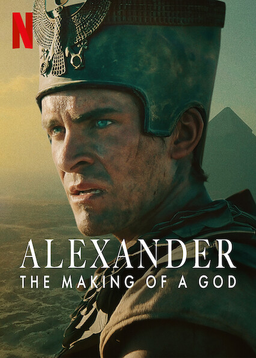

We’re here when you can’t decide! Browse through movies and series selected for you and find your favorite
instantly.

The Queen's Gambit
In the 1950s, orphan Beth Harmon discovers chess in the orphanage and shows incredible talent.
As she rises to become a world chess champion at a young age, she also struggles with personal
challenges and addictions. The series portrays both her chess battles and Beth’s character development.
Modern Family
This comedy series humorously depicts the daily lives and relationships of three different families.
It explores both classic and modern family dynamics and makes viewers laugh with its witty style.
The show offers heartfelt stories about family bonds, friendships, and different family structures in
today’s society.

Rise Of Empires: Ottoman
This historical series dramatically tells the story of Ottoman Sultan Mehmed II’s conquest of Istanbul in
1453.
Scenes prepared with historical accuracy and strategic battle plans provide viewers both an educational
and visually spectacular experience.

Alexander: The Making of a God
This documentary-style series vividly portrays the life of Alexander the Great, from his childhood
to his youth and the process of building his empire. It highlights his strategic battles, personal
challenges,
and leadership skills.